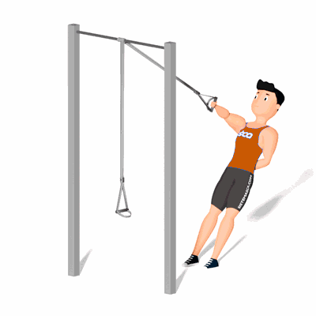

Remada Unilateral no TRX

O exercício trabalha o fortalecimento dos músculos das costas, os ombros e bíceps, como também a estabilização. Esse exercício é recomendado para praticantes avançados.
Ficha Técnica
Tipo: Funcional
Grupo Muscular: Costas
Aparelho: Nenhum
Músculos: Nenhum
Como realizar
- Agarre com uma mão a fita com a palma virada para dentro e incline seu corpo para trás, trazendo o peso para os calcanhares;
- Permaneça com o braço estendido para frente, no formato de uma diagonal;
- Dobre o cotovelo e puxe, alinhando a mão ao tórax, em movimento de uma remada;
- Retorne à posição inicial e repita os movimentos.
 RC STORE
RC STORE